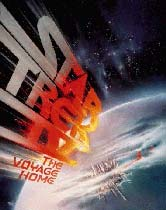
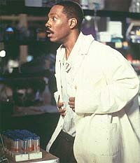
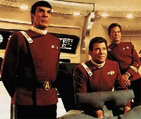
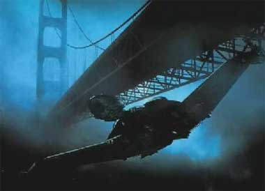
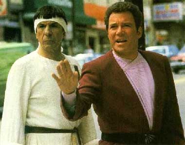
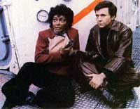
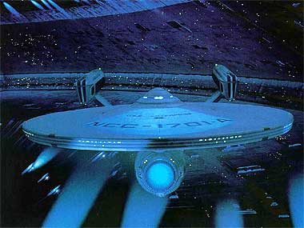

|
Voltando
para Casa em grande estilo
 As
coisas iam muito bem para todos na Paramount por causa do sucesso de
Jornada nas Estrelas III. As negociações para um quarto filme
foram bastante fáceis, mesmo com as mudanças ocorridas no
"staff" do estúdio. Nimoy gozava de muitos privilégios
assim como Harve Bennett. Muitos risos, tapinhas nas costa, almoços
e jantares ajudavam a estabelecer o ritmo de trabalho para acertar o
roteiro do filme, que deveria ser uma história leve, pois as coisas
já tinham ficado difíceis para a tripulação da Enterprise nos
filmes anteriores. As
coisas iam muito bem para todos na Paramount por causa do sucesso de
Jornada nas Estrelas III. As negociações para um quarto filme
foram bastante fáceis, mesmo com as mudanças ocorridas no
"staff" do estúdio. Nimoy gozava de muitos privilégios
assim como Harve Bennett. Muitos risos, tapinhas nas costa, almoços
e jantares ajudavam a estabelecer o ritmo de trabalho para acertar o
roteiro do filme, que deveria ser uma história leve, pois as coisas
já tinham ficado difíceis para a tripulação da Enterprise nos
filmes anteriores.
 Nicholas
Meyer voltou para ajudar por causa do tempo curto de preparação e
propôs algo que já tinha feito em " Um Século em Quarenta e
Três Minutos": fazer uma volta ao tempo para resolver algum
problema de outra época. Harve Bennett também concordou porque
gostava de " A Cidade à Beira da Eternidade", da série
televisiva. Até Gene Roddenberry achou uma boa, embora tivesse a
sua idéia sobre o assassinato de JFK deixada de lado mais uma vez
pela produção. Seus memorandos foram mandados à rodo para
Bennett, que resolveu acatar e comentar só o que ele achava bom,
ignorando o resto.
A proposta de fazer uma história leve e divertida mas que tivesse
um bom ensinamento foi extremamente bem sucedida em todos os
sentidos pois em meados da década de 80 o mundo já estava
mobilizado em função dos desastres ecológicos causados por
desequilíbrios promovidos pelo homem. Nimoy aproveitou bem esses
ganchos contando ainda com a simpatia do público em colcoar as
estrelas da Frota Estelar no seu cotidiano.
Nimoy foi influenciado pela leitura de um livro que apontava para o
extermínio de milhares de espécies no século XX por causa do
desequilíbrio ambiental. Por isso, propôs que o problema a ser
resolvido tivesse a ver com a extinção de baleias corcundas
outrora contactadas por seres alienígenas que retornaram ao século
XXIII para saber como eles estavam. Com a ajuda de "experts
", um biólogo marinho, um cientista especialista em comunicações
interestelares bolou a sonda que vemos na abertura do filme. A já
renegada tripulação da Enterprise teria que voltar ao nosso tempo
para salvar a Terra no seu século, mas precisaria de gente que
colaborasse.
 Eddie
Murphy se ofereceu para fazer um professor aloprado que entenderia
do assunto mas era muito ridicularizado por todos pelo fato de
acreditar em vida extraterrestre. Ele já era um estouro de
bilheteria na Paramount e trekker de carteirinha, mas acharam melhor
deixar separados dois grandes sucessos do estúdio para não
comprometer muito, caso o filme não fosse bem sucedido. Parece que
um pouco dessas idéias ajudaram Murphy em "O Professor
Aloprado" em duas edições na tela grande muito tempo depois.
 Os
outros atores aderiram rapidamente e buscavam ver seus personagens
mais desenvolvidos, o que de fato aconteceu, com exceção de Sulu.
Haveria uma cena em que ele conheceria um garoto nas ruas de S.
Francisco, que depois de algum papo, descobriria que ele era o seu
bisavô. Mas a mãe e o irmão do ator mirim atropelaram o seu
desempenho e atrapalharam tanto que a cena foi cortada, para
desespero de George Takei. Algumas outras coisas não deram certo.
Houve uma certa dose de "fogueira das vaidades" entre
Nimoy e Bennett, disputando o controle sobre o filme, causando
ranhuras no seu relacionamento. Mas quase tudo rolou às mil
maravilhas, até mesmo nas cenas de rua em S. Francisco, sem que os
pedestres soubessem que estavam num filme, pelo menos no início, até
que a multidão começasse a se aglomerar em volta.
Um crédito deve ser dado à ILM porque as baleias eram marionetes e
modelos artificiais bastante convincentes. Apenas em 10% das cenas
apareceram baleias verdadeiras com imagens de arquivo. "Tudo o
que peço é uma nave e uma estrela para me guiar", repetiu
Kirk ao receber a comissão da nova NCC1701-A, Enterprise citando J.
Masnfield quando voltava de fato para "casa" na quarta edição
de suas aventuras. Ele já tinha sido promovido, processado,
condenado, rebaixado mas cumpriu a sua missão com a ajuda de seus
amigos mais uma vez. Não faltou a boa e velha coragem, heroísmo,
etc, para superar as dificuldades das situações anteriores e da
ameaça planetária de um novo alienígena totalmente desconhecido.

Descontando os recursos precários do século XX, ele teria que
tentar reunir de novo pau, pedra e enxofre buscando as saídas possíveis.
A sorte também o ajudou porque contou com a ajuda de uma
"minhoca da terra" que o interessou mais do que a simples
competência profissional. Mas nosso herói-galã tomou um sinal
vermelho da Dra. Gillian por estar mais preocupada com a exploração
do desconhecido no futuro. Assim, temos Kirk de volta à cadeira da
ponte de comando da sua nave deixando definitivamente de ser um
burocrata e "fazendo a diferença", conforme diria a
Picard muito tempo depois.
Spock ainda meio descompassado pelo retorno do seu "Katra"
é levado a se confrontar com a sua metade humana através das
lembranças de seu salvamento feito pelos seus ilógicos amigos, da
preocupação de sua mãe, Amanda, com o seu estado emocional, dos
erros e arrogância dos humanos ao cometer muitos equívocos na história,
como o desrespeito às outras formas de vida no planeta, se
colocando como superior a elas. A dificuldade dos humanos em lidar
com o diferente e desconhecido ainda atrapalhou a ponto de ter que
parecer um dos "doidões" dos movimentos de rebeldia
estudantil da década de 60 nos EUA vestindo uma túnica branca com
uma tira na cabeça. Ainda bem que São Francisco é uma cidade onde
o "normal" e o "anormal" convivem
democraticamente.

No fim de tudo, Spock alcança o tão difícil reconhecimento de seu
pai, Sarek, sobre o seu ingresso na Frota Estelar em vez de ter
permanecido na Academia de Ciências de Vulcano. Além disso, Spock
cita um belo ditado que serve muito para a realidade dos humanos :
"A burocracia é a única constante no Universo ".
McCoy volta a ser o grande bom doutor de sempre salvando Chekov das
mãos dos bárbaros do século XX e fazendo milagres como a cena da
velhinha no "Mercy's Hospital". Ele ainda arrisca uma
discussão filosófica sobre a vida/morte com Spock, mas foi deixado
de lado. De todo modo, sempre que pode não deixa de provocar o
vulcano com sua ironia e diatribes usuais.
Quando o IBM 386 ainda arrebatava corações e mentes como um símbolo
de avanço tecnológico deste século, Scotty já mostrava o seu
estranhamento com uma máquina tão obsoleta que precisava de um
teclado para funcionar! Este sim teve que juntar pau, pedra e
enxofre para dar mais um jeitinho de fazer o seu capitão sorrir
mais uma vez, passando a tecnologia de "plexiglass" para
um jovem e promissor empresário da Califónia. Mais ainda, ele teve
que usar a velha e ineficiente energia nuclear, tida como demonstração
máxima de poder e força, para restaurar os cristais de
"dilithium" da desgastada ave-de-rapina klingon.
"Santo milagre, Batman!".
 Uhura
conseguiu um pouco mais de espaço atuando com Chekov para
"roubar" energia do CNV- 65 Enterprise e conseguir os códigos
de comunicação com as baleias. Afinal de contas vimos que
"quem não se comunica, se trumbica". (Este é mais um
ditado vulcano?).
Sulu e Chekov também apareceram um pouco mais. O primeiro se
divertindo com a pilotagem de um "velho" helicóptero
Hurley e feliz da vida ao ver como era no passado a sua cidade
natal. O segundo é digno de nota porque é responsável por algumas
das boas piadas do filme, sendo um russo a bordo de um navio de
guerra norte-americano quando ainda se consideravam inimigos
mortais, e, também, pela gracinha de querer se autopromover pela
suposta falta de memória causada pelo seu acidente a bordo do
"Big E".
George e Gracie ajudaram a Federação a sair da mira dos alienígenas
e viveram felizes para sempre no século XXIII. Todo o desfecho
estava completo, JE estava mais do que nunca consolidado como um
grande sucesso cinematográfico, a nave estava bem em cima dos
trilho, mas alguém a faria derrapar e capotar a beira da fronteira
final...

Cláudio
Silveira escreve quinzenalmente sobre os filmes com
exclusividade para a Trek Brasilis
|